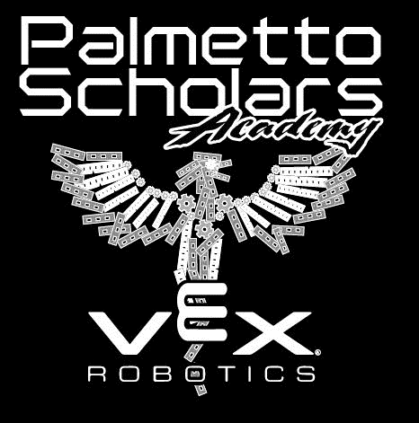

The VRC Phoenix Winter Tournament¶
VRC Change Up¶
December 5th 2020
Welcome to The VRC Phoenix Winter Qualifier! We look forward to a competitive and exciting VRC Change Up tournament which will include virtual judged awards. Only competitors and registered coaches will be permitted in the team area in order to maintain safe social distancing. Spectators will not be permitted to attend. Thank you for your cooperation in creating a safe event for our competitors.